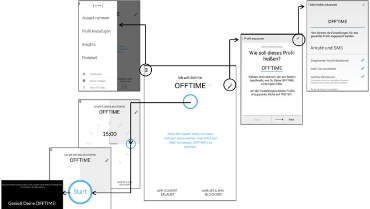

After successfully finishing my undergraduate studies at Humboldt-Universität zu Berlin and earning my Bachelor of Science degree in Psychology, I still wanted to learn more about human-machine-interaction. That is why I enrolled at Technische Universität zu Berlin and am currently finishing the Human Factors Master of Science program.
My main interest is in the usability and user experience of software products, as well as the methodology of Design Thinking. I pursue to enhance my theoretical knowledge and practical skills in those fields through application-oriented student projects and my position as a User Researcher at D-LABS GmbH.
Aside from my aspirations in the field of engineering psychology, I am a passionate dancer, dance teacher and choreographer. I started to teach various dance styles when I turned 18 in 2009 and kept working in that area ever since in order to finance my studies. It was a pleasure to realize, how much of the knowledge gained through my psychology studies I am able to apply inside of the dance studio – and beyond.
My Work
Master Thesis preliminary
Integration of Social Support into an App for Adolescent Scoliosis Patients in context of the innovation cluster BeMobil. Systematic analysis of the benefits of different dimensions of social support for the patient’s motivation and UX.

Bachelor Thesis
Heuristic, formative and summative usability evaluation of the smartphone app ( OFFTIME ). Deduction of design implications and test of their effects on the usability of the product in close cooperation with the development team. Thesis under the supervision of Prof. Hartmut Wandke and Prof. Annekatrin Hoppe
Usability Test of the smartphone app Beatsnap
Heuristic evaluation, development of a prototype and conduction of the first part of an A/B-Test. Deduction of design implications. In context of the seminar "usability for small- and medium-sized businesses" at Technische Universität Berlin in cooperation with Lascha Sochadse and Fabian Zeier under the supervision of Nils Backhaus and Anna Trapp.

chef2go
Project in cooperation with Anna Münster and Stefan Selent for the 2015 Hack'n'Wear Hackathon at Ahoy! Berlin by Salesforce and Accenture

Modeling of an interaction with WhatsApp
Presentation in context of the lecture "Introduction to cognitive modeling" in cooperation with Simon Kock and Anka Stephan under the supervision of Prof. Nele Rußwinkel

Alternative Architectures - Soar and 4CAPS
Presentation in context of the lecture "Introduction to cognitive modeling" in cooperation with Niklas Fasching, Mirja Hollmann and Nikolai v. Seydlitz under the supervision of Prof. Nele Rußwinkel

Application of Donald Norman's design principles on the Xbox 360
For more details view presentation and documentation.

Presentation: Challenges for Design
Presentation for the seminar "Operational and display concepts" at Humboldt-Universität zu Berlin in cooperation with Anna Rychla and Anne Schmidtke under the supervision of Prof. Hartmut Wandke

Presentation: Human-machine interaction with technical household appliences.
Presentation for the seminar "Psychology and technics" at Humboldt-Universität zu Berlin under the supervision of Prof. Hartmut Wandke
Life as a dancer

Royals - Lorde
Jazzdance Intermediate Class: Work in progress at TenDance Berlin Köpenick

Last Stand - Kwabs
Jazzdance Intermediate Class: Work in progress at TenDance Berlin Köpenick

Shelter - Birdy
Choreography by Sabine Hilpert
Contemporary Jazz Advanced at TenDance Berlin Köpenick

Sail - Awolnation
Choreography by Sabine Hilpert
Contemporary Jazz Advanced at TenDance Berlin Köpenick

Floorworks
Combination by Sabine Hilpert
Contemporary Jazz Advanced at TenDance Berlin Köpenick
Get In Touch
If you would like to know more about me and my projects or if you are interested in any kind of collaboration, please feel free to contact me.
I am more than happy to get in touch with you!